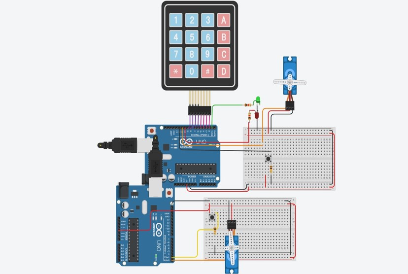

Com a execução desse projeto, tenho como objetivo reduzir ao máximo possível o consumo desnecessário da energia elétrica reduzindo/minimizando o tempo de funcionamento das lâmpadas, luminárias quando o uso das mesmas não forem mais necessário.
E para tal redução, pretendo usar lâmpadas de Led (porque o uso dessas lâmpadas será essencial na redução do consumo elétrico isto porque, as mesmas consomem pouca energia, porém produzem um alto nível de luminosidade ou superior do que as lâmpadas incandescentes que para além de não serem económicas, não são sustentáveis). Os sensores de movimento serão usados de modo a controlar os movimentos dentro da residência e de acordo com as informações captadas pelos sensores, as mesmas informações serão encaminhas para a “central de controlo (Arduíno)” permitindo assim que as luzes acendam ou mantenham apagadas.
Após a conclusão do projeto, o objetivo é expandir o mesmo projeto de automação residencial para toda a casa, adicionando mais sensores como: sensores de luminosidade, temperatura etc. e aplicar os novos modelos de automação residencial não se limitando apenas na parte do consumo elétrico desnecessário, mas também pela parte estética.
